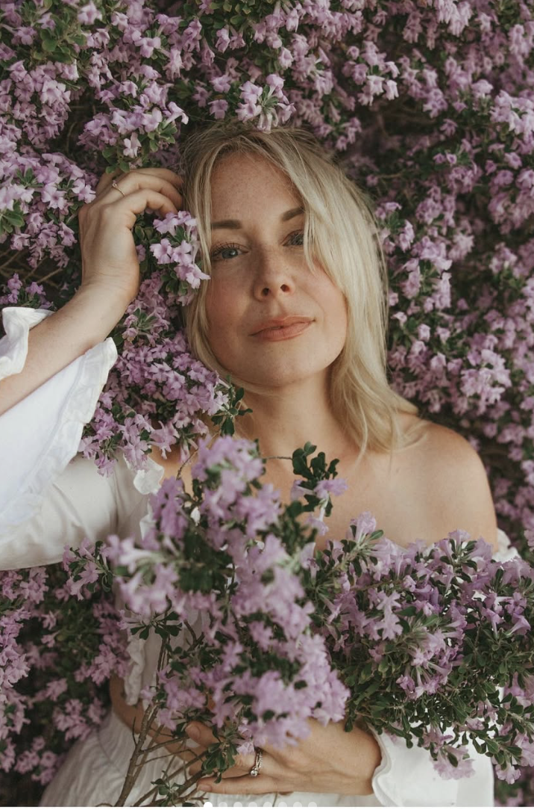
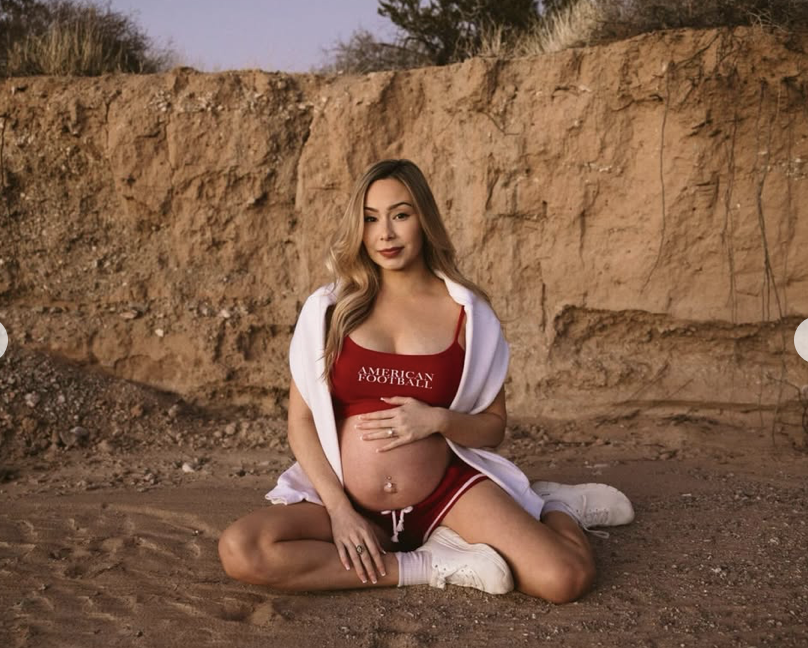
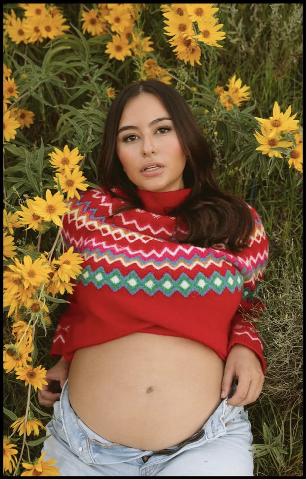
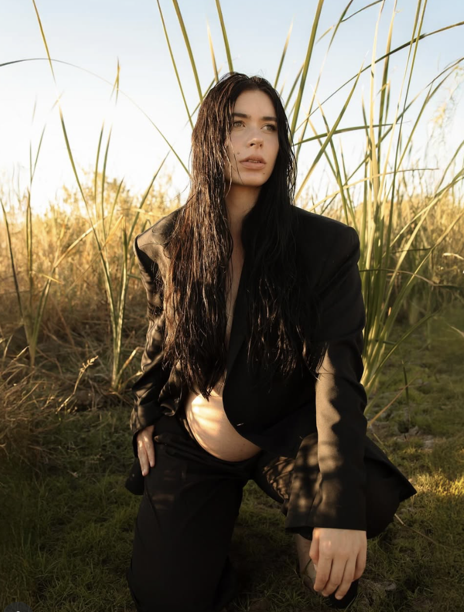
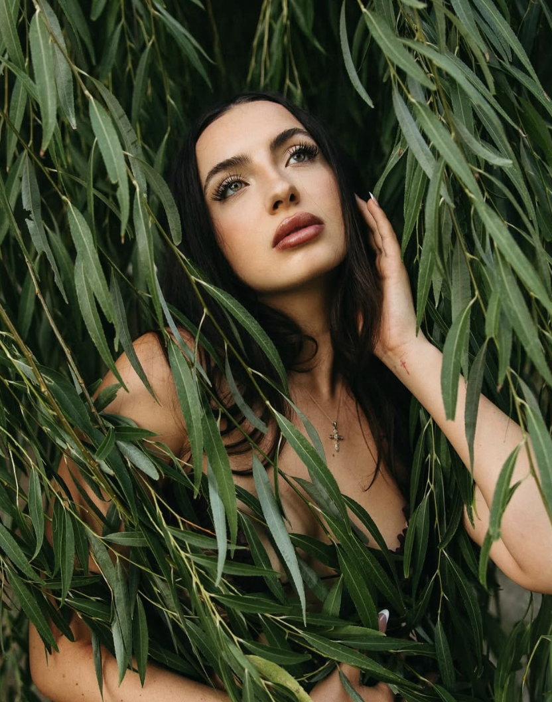
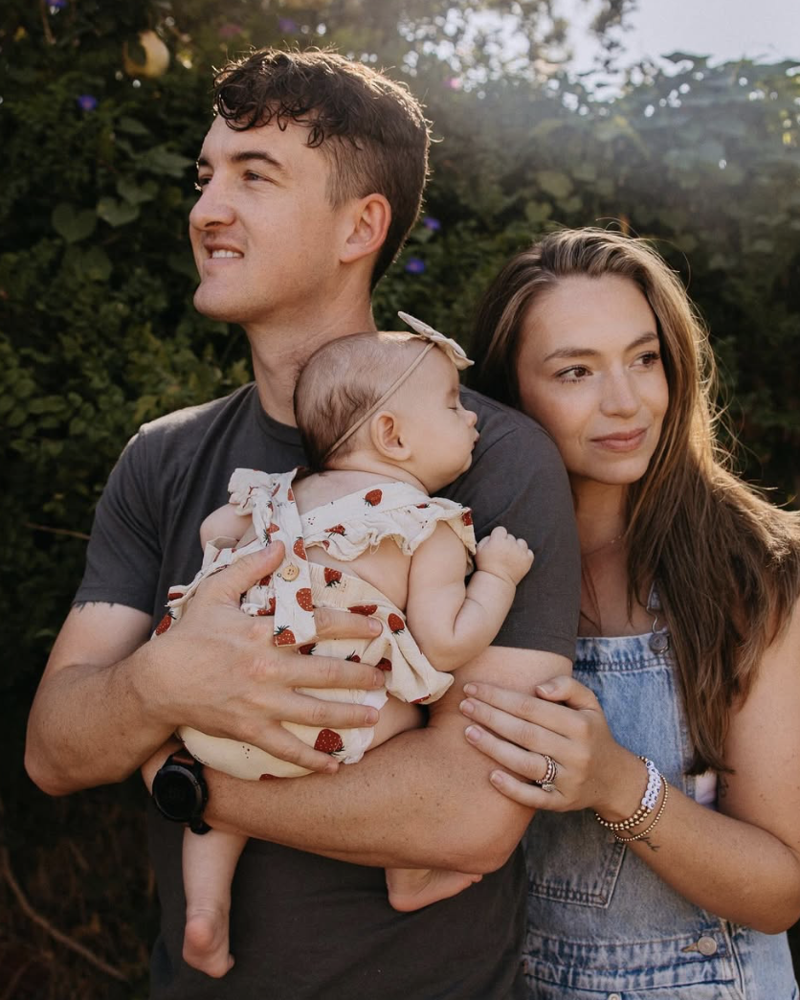

Las Cruces Photographer
Portraits, maternity, fashion, and stories shaped by desert light.
A starter showcase for Carly's sessions around Las Cruces, ready to replace with her real galleries as the portfolio grows.
Maternity
Quiet, luminous images for growing families.
Soft styling, gentle direction, and warm outdoor light make maternity sessions feel calm, personal, and beautiful.



Fashion
Editorial work with style, motion, and confidence.
For models, boutiques, creators, and personal brands, Carly can build images that feel styled without losing personality.

Portraits
Images that look polished and still feel human.
Portrait sessions can be personal, professional, romantic, creative, or simple, with direction that helps people relax.

Lifestyle
Flexible sessions for milestones, families, and everyday stories.
From desert walks to at-home moments, Carly can photograph the details clients want to remember.
Local Sessions
Based in the Las Cruces area.
Carly can keep sessions close to home or plan around the look of southern New Mexico: warm desert tones, open skies, downtown textures, and soft evening light.
Work With Carly
Bring your session idea to life.
Send Carly the session type, ideal date range, and preferred Las Cruces-area location. She can follow up with availability and package details.